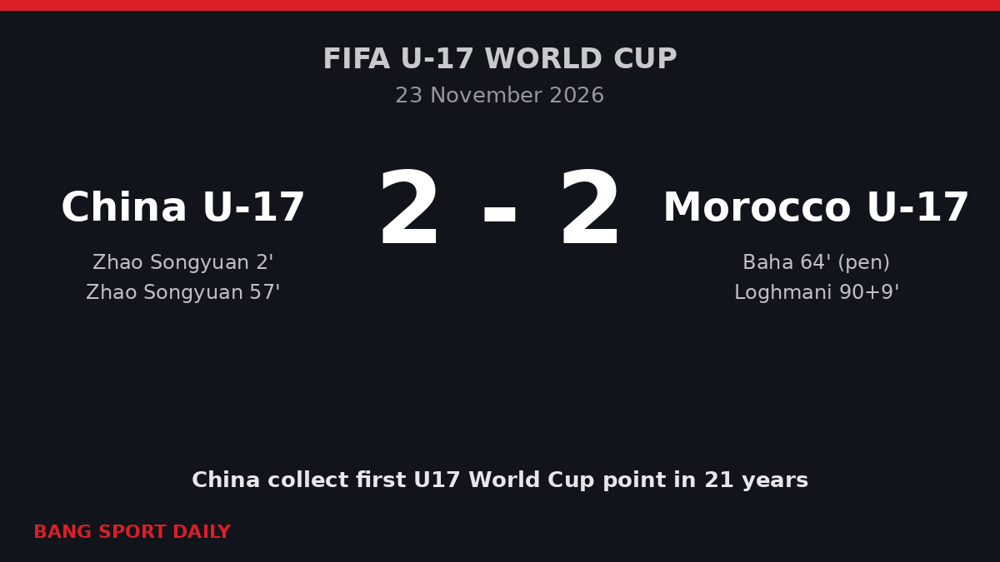

奥运项目
田秉毅出任中国羽毛球队总教练 领衔备战2028洛杉矶奥运周期
63岁羽坛宿将重掌国家队帅印，双料奥运冠军张楠同步进入教练组。

人物故事
约瑟·斯库林的传奇之路：从儿时梦想到新加坡历史首枚奥运金牌
倾尽家财的家庭付出、赴美深造的严苛历练，以及里约力克菲尔普斯创造的奥运纪录，如何铸就这位新加坡泳坛巨星的非凡人生。

人物故事
从伦敦饮恨到里约封神：越南首枚奥运金牌得主黄春荣的传奇人生
幼年丧母、重度近视、屡次与奖牌擦肩而过，这位军中神枪手最终为越南射落历史奥运首金。

奥运项目
因身体状况与负荷受限，卡米拉·瓦利耶娃遗憾缺席车里雅宾斯克全俄锦标赛
在医生限制其训练负荷后，这位20岁名将未出现在俄罗斯花滑联合会公布的初步参赛名单中。

足球
霍达克重返马来西亚出任国家队主帅，“马来亚虎”架构调整陈清和转任总监
55岁的克罗地亚名帅接过帅印，临时主帅陈清和则退居幕后专职协调国家队架构运营。
头条

人物故事
从糖果厂球场到羽坛传奇：拉差诺·因达农的羽球人生
这位2013年世锦赛冠军战胜贫困、伤病与丧母之痛，铸就东南亚羽坛最具代表性的单打标杆。

足球
时隔21年的世界杯积分！中国U17战平摩洛哥，赵松源双响遭读秒绝平
赵松源梅开二度力拔头筹，摩洛哥第99分钟补时绝平，浮岛敏麾下国少痛失好局。

格斗
哈萨克斯坦拳击队公布世界杯总决赛名单：11人出征塔什干收官战
卡琳娜·伊布拉吉莫娃领衔六男五女阵容出征乌兹别克斯坦，迎战31国拳坛劲旅。

格斗
俄罗斯拳击联合会在巴拿马大会获表决通过，正式成为World Boxing全权会员
第四届World Boxing大会代表投票授予俄罗斯正式表决权，该奥运拳击管理机构在2028年洛杉矶奥运周期进一步扩军。

网球
米拉·安德烈耶娃2026年斩获1065万美元奖金 跻身全球网坛前五
这位19岁的法网冠军在Sportico年终榜单中位列女球员次席，仅次于哈萨克斯坦名将莱巴金娜。

格斗
高棉拳冠军范东点数完胜力基，东京K-1复仇之战第二季扬威
柬埔寨名将在后乐园厅包揽三张打分卡，成为最新一位在K-1超羽量级掀起波澜的高棉拳斗士